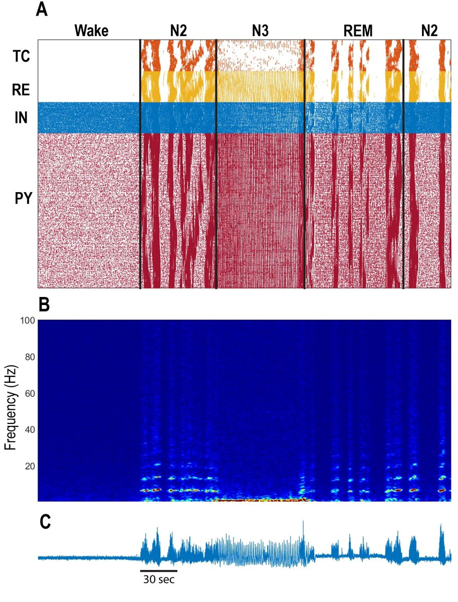
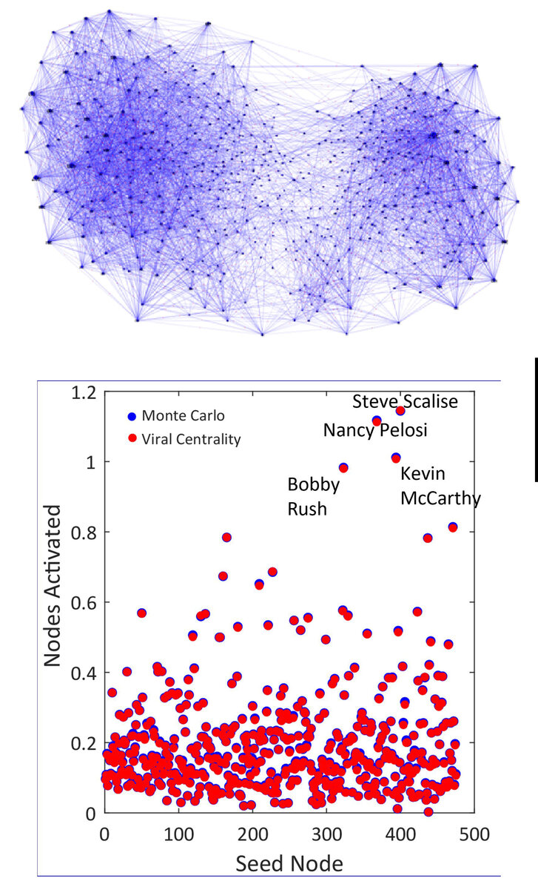

Research Projects
Research in my lab applies tools and ways of thinking from physics to interdisciplinary problems.
Our main focus is on the brain: we apply tools and ways of thinking from physics to better understand brain function.
One set of particularly useful tools comes network theory, a relatively new field that has drawn many insights
from statistical physics. Recent work in my lab has focused on understanding the function of sleep, as well as
identifying influential nodes in complex networks.
Neuroscience of sleep

Developing a unified theory of how the brain works is one of the grandest challenges in all of science.
How do three pounds of flesh generate the feeling of life itself? The answer must somehow lie within
the quadrillions of connections between the 86 billion neurons in a typical human brain.
While my lab is unfortunately nowhere close to formulating a grand unified theory of the brain, we are making progress in understanding how networks of neurons interact to perform specific brain functions.
One example is in sleep. During the deepest stage of sleep (N3), neurons in the neocortex undergo a slow rhythm (around 1 Hz) of waxing and waning activity. These
The figure to the left shows simulations my lab has performed (in collaboration with Maxim Bazhenov's group at UCSD) of thalamocortical brain activity during different stages of sleep. Panel A shows a raster plot, with each dot representing the spike of a particular neuron at a particular point in time. Panel B depicts the spectrogram of Panel C, which is the simulated local field potential (similar to EEG) of the collective network activity.
While my lab is unfortunately nowhere close to formulating a grand unified theory of the brain, we are making progress in understanding how networks of neurons interact to perform specific brain functions.
One example is in sleep. During the deepest stage of sleep (N3), neurons in the neocortex undergo a slow rhythm (around 1 Hz) of waxing and waning activity. These
slow wavesare associated with memory consolidation and clearance of metabolic waste products. In a lighter stage of sleep (N2), a different brain rhythm (so-called
sleep spindles) is more prominent. These have been associated with the transfer of memories from one brain region to another (hippocampus to cortex).
The figure to the left shows simulations my lab has performed (in collaboration with Maxim Bazhenov's group at UCSD) of thalamocortical brain activity during different stages of sleep. Panel A shows a raster plot, with each dot representing the spike of a particular neuron at a particular point in time. Panel B depicts the spectrogram of Panel C, which is the simulated local field potential (similar to EEG) of the collective network activity.
Network theory

In the last few decades, the advent of the internet and social media has spurred intense interest in understanding structures
and interactions with networks. The nascent field of network theory has grown to involve mathematicians, computer scientists,
engineers, and physicists. Network theory develops tools to analyze any phenomenon that can be represented as a
set of
One question of particular interest is: given a social network, how can we accurately and efficiently identify the most influential users? Using Twitter/X as an example, one approach is to use brute force (aka
We tested our algorithm on the network of Twitter interactions between members of the 117th U.S. Congress (visualized in the top graphic). The bottom figure depicts how many average retweets (or
nodesthat are connected to one another—for example, websites connected by hyperlinks, genes connected by molecular interactions, social network users connected by social ties, etc.
One question of particular interest is: given a social network, how can we accurately and efficiently identify the most influential users? Using Twitter/X as an example, one approach is to use brute force (aka
Monte Carlo) simulation to investigate how many times (on average) a tweet by a given user gets retweeted throughout the network. This is very computationally expensive and therefore infeasible for large networks. My students and I developed an algorithm, dubbed the
Viral Centrality,that takes a shortcut to computing these results. It is slightly less accurate but in many cases much faster, making it more useful for real-world application.
We tested our algorithm on the network of Twitter interactions between members of the 117th U.S. Congress (visualized in the top graphic). The bottom figure depicts how many average retweets (or
nodes activated) each Congressperson (or
seed node,a unique ID number assigned to each member of Congress) received for a given tweet. Larger values on the y-axis imply greater influence. Our Viral Centrality results (in red) are virtually identical to the Monte Carlo results (in blue), demonstrating the accuracy of our network algorithm. (The top four most influential members of Congress are listed with their corresponding data points.)